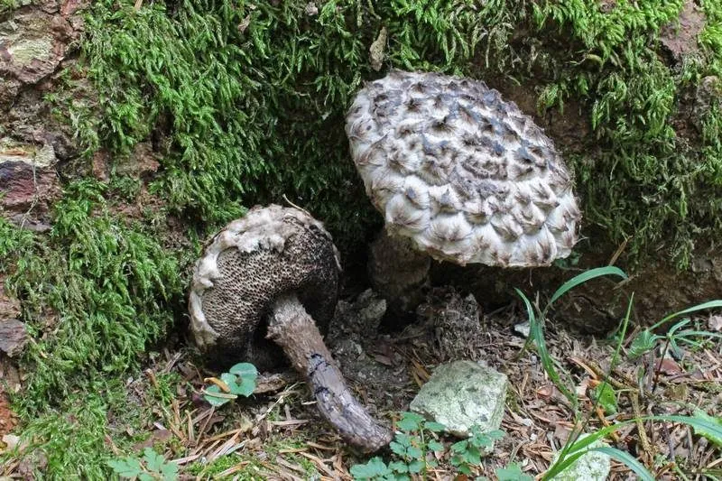

真菌 · 真菌界
松塔牛肝菌 Strobilomyces strobilaceus

菌盖密布黑色鳞片、形似松塔的牛肝菌，灰黑色外观十分独特，菌肉受伤后变红再变黑，可食但口感一般。
- 分类
- 门担子菌门纲伞菌纲目牛肝菌目科牛肝菌科属松塔牛肝菌属
- 栖息环境
- 阔叶林和针阔混交林的地面，与栎树、松树形成外生菌根
- 地理分布
- 欧洲、北美和东亚，中国南方和西南林区有分布
- 保护级别
- 暂无评估（IUCN 未评估，中国未列入重点保护名录）
物种志
松塔牛肝菌是担子菌门牛肝菌目的外生菌根真菌，子实体单生或群生。菌盖呈半球形，直径 4–12 cm，表面密布黑色、灰褐色至褐色的毛状鳞片，层层叠叠像一颗松塔，因此得名；菌管幼时灰白色，后变黑褐色；菌柄细长，表面也有鳞片；孢子印黑褐色。
松塔牛肝菌与栎树、松树等树木形成外生菌根，多生于阔叶林和混交林的地面，夏秋季出菇，在欧洲、北美和东亚都有分布。它的菌肉受伤后会先变红、再变黑，外观独特。该菌虽被认为可食，但菌肉较软、口感一般，且必须充分加热；它的鳞片状菌盖在落叶层中十分显眼，容易辨认。采摘时要与有毒的牛肝菌区分，不熟悉者不要采食。
形态与习性
- 菌盖直径 4–12 cm，密布黑色毛状鳞片，形似松塔
- 菌管幼时灰白色，后变黑褐色
- 菌柄细长，表面也有鳞片
- 孢子印黑褐色
- 变色菌肉受伤后先变红再变黑
- 食用性可食但口感一般，必须充分加热
趣味知识
- 松塔牛肝菌的菌盖布满黑色鳞片，外形像一颗松塔，因此得名。
- 它的菌肉受伤后会先变红再变黑，变色过程十分有趣。
- 该菌虽可食但口感一般，采摘时需与有毒牛肝菌区分。